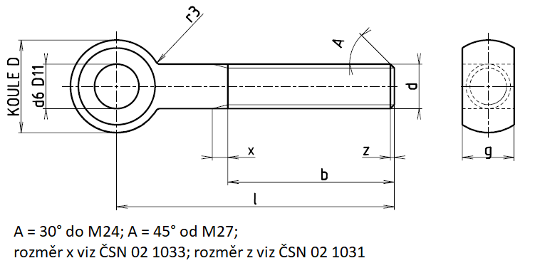

Otočné šrouby s okem
podle ČSN 02 1167

Příklad označení šroubu se závitem M12 délky l=70 mm, třídy pevnosti 4, z oceli 10 370, zinkovaného:
ŠROUB M12×70 ČSN 02 1167.05
Rozměry otočných šroubů s okem od M3 do M18
Rozměry v milimetrech
| Závit d |
M3 |
M4 |
M5 |
M6 |
M8 |
M10 |
M12 |
(M14) |
M16 |
(M18) |
| g |
4 |
5 |
6 |
8 |
10 |
12 |
14 |
16 |
17 |
20 |
| d6 |
3 |
4 |
5 |
6 |
8 |
10 |
12 |
14 |
16 |
16 |
| D |
8 |
10 |
12 |
14 |
18 |
20 |
25 |
28 |
32 |
36 |
| r3 |
1,5 |
2,0 |
2,5 |
4 |
4 |
4 |
6 |
6 |
6 |
6 |
Rozměry otočných šroubů s okem od M20 do M39×3
Rozměry v milimetrech
| Závit d |
M20 |
(M22) |
M24 |
(M27) |
M30 |
(M33) |
M36×3 |
(M39×3) |
| b1) |
46 |
50 |
54 |
60 |
66 |
72 |
78 |
84 |
| 52 |
56 |
60 |
66 |
72 |
78 |
84 |
90 |
| g |
22 |
24 |
25 |
27 |
30 |
34 |
38 |
41 |
| d6 |
20 |
20 |
25 |
25 |
28 |
28 |
32 |
36 |
| D |
40 |
42 |
45 |
50 |
55 |
60 |
65 |
70 |
| r3 |
6 |
6 |
10 |
10 |
16 |
16 |
16 |
16 |
1) Délky závitu b uvedené v první řádce platí pro délky šroubů l do 150 mm včetně; délky závitu b uvedené v druhé řádce platí pro délky šroubů l přes 150 mm.
Délky a hmotnosti otočných šroubů s okem od M3 do M18
| Závit d |
M3 |
M4 |
M5 |
M6 |
M8 |
M10 |
M12 |
(M14) |
M16 |
(M18) |
| Délka l [mm] |
Přibližná hmotnost 1000 šroubů [kg] |
| 30 |
2,7 |
7,0 |
7,1 |
10 |
|
| 35 |
|
7,4 |
7,8 |
12 |
|
| 40 |
|
7,8 |
8,6 |
13 |
23 |
|
| 45 |
|
8,3 |
9,3 |
14 |
25 |
36 |
|
| 50 |
|
8,8 |
10 |
15 |
27 |
39 |
|
| 55 |
|
11 |
16 |
29 |
42 |
68 |
|
| 60 |
|
12 |
17 |
31 |
45 |
72 |
100 |
132 |
|
| 65 |
|
12 |
18 |
33 |
48 |
76 |
106 |
140 |
|
| 70 |
|
13 |
19 |
35 |
52 |
81 |
112 |
148 |
|
| 75 |
|
14 |
20 |
37 |
55 |
85 |
118 |
148 |
|
| 80 |
|
15 |
22 |
38 |
58 |
90 |
124 |
164 |
|
| 90 |
|
42 |
64 |
98 |
136 |
180 |
237 |
| 100 |
|
46 |
70 |
107 |
148 |
196 |
257 |
| 110 |
|
50 |
76 |
116 |
160 |
212 |
277 |
| 120 |
|
54 |
82 |
125 |
172 |
228 |
297 |
| 130 |
|
58 |
88 |
134 |
184 |
234 |
317 |
| 140 |
|
62 |
94 |
142 |
196 |
250 |
337 |
| 150 |
|
151 |
208 |
266 |
357 |
| 160 |
|
159 |
220 |
274 |
373 |
| 180 |
|
177 |
244 |
304 |
413 |
| 200 |
|
195 |
268 |
334 |
453 |
| 220 |
|
213 |
292 |
364 |
493 |
| 240 |
|
231 |
316 |
394 |
533 |
| 260 |
|
249 |
340 |
424 |
573 |
| 280 |
|
267 |
364 |
454 |
613 |
| 300 |
|
285 |
388 |
484 |
653 |
Délky a hmotnosti otočných šroubů s okem od M20 do M39×3
| Závit d |
M20 |
(M22) |
M24 |
(M27) |
M30 |
(M33) |
M36×3 |
(M39×3) |
| Délka l [mm] |
Přibližná hmotnost 1000 šroubů [kg] |
| 90 |
313 |
366 |
425 |
|
| 100 |
338 |
396 |
461 |
|
| 110 |
363 |
426 |
496 |
|
| 120 |
387 |
455 |
531 |
627 |
|
| 130 |
412 |
485 |
563 |
673 |
|
| 140 |
437 |
515 |
603 |
718 |
|
| 150 |
461 |
545 |
638 |
762 |
1011 |
1257 |
1516 |
1816 |
| 160 |
485 |
573 |
673 |
807 |
1065 |
1324 |
1596 |
1910 |
| 180 |
534 |
634 |
745 |
897 |
1177 |
1458 |
1756 |
2095 |
| 200 |
584 |
694 |
816 |
986 |
1287 |
1593 |
1916 |
2285 |
| 220 |
626 |
746 |
875 |
1064 |
1383 |
1709 |
2057 |
2449 |
| 240 |
676 |
816 |
946 |
1153 |
1494 |
1843 |
2278 |
2636 |
| 260 |
725 |
866 |
1017 |
1263 |
1606 |
1976 |
2378 |
2824 |
| 280 |
774 |
926 |
1088 |
1333 |
1716 |
2110 |
2537 |
3010 |
| 300 |
823 |
986 |
1159 |
1422 |
1826 |
2245 |
2696 |
3198 |
Mechanické vlastnosti (první doplňková číslice) 0; úprava povrchu (druhá doplňková číslice) 0, 2, 3, 4, 5.